STEP 01
两端分开定义
家长要的是「看得懂」，孩子要的是「玩得下去」，两个目标完全不同。所以没有用一套界面逻辑去套两端，而是先分别确定各自的核心任务，再往下定设计方向。
PROJECT 09 · 教育产品 · 在研
01 / 项目背景
NativeLike 是一款面向儿童的语言学习 App，分家长端与儿童端两条主线， 儿童端的课程内容按一阶到六阶递进。我接手时产品流程已经跑通， 但有三件事卡在体验上。
02 / 设计过程
STEP 01
家长要的是「看得懂」，孩子要的是「玩得下去」，两个目标完全不同。所以没有用一套界面逻辑去套两端，而是先分别确定各自的核心任务，再往下定设计方向。
STEP 02
把课程内容包进游戏里，用界面与动效的即时反馈维持注意力，让孩子愿意每天自己打开。
STEP 03
用同一套色彩、组件与图形规范覆盖六个阶段，让每一阶有自己的阶段感，但整体看起来是一个产品。
03 / 设计展示
六阶游戏界面
我参与最深的部分：五关场景世界（小船 / 滑板车 / 拖拉机 / 火车）的统一，以及六个学习单元里的游戏界面。
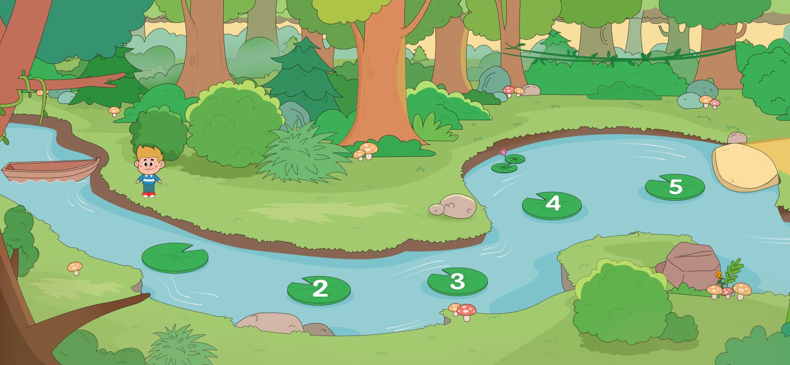
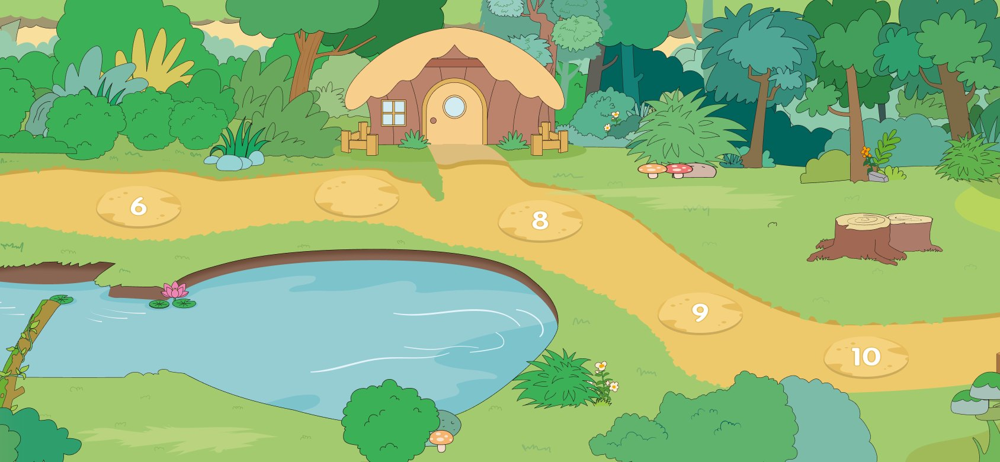
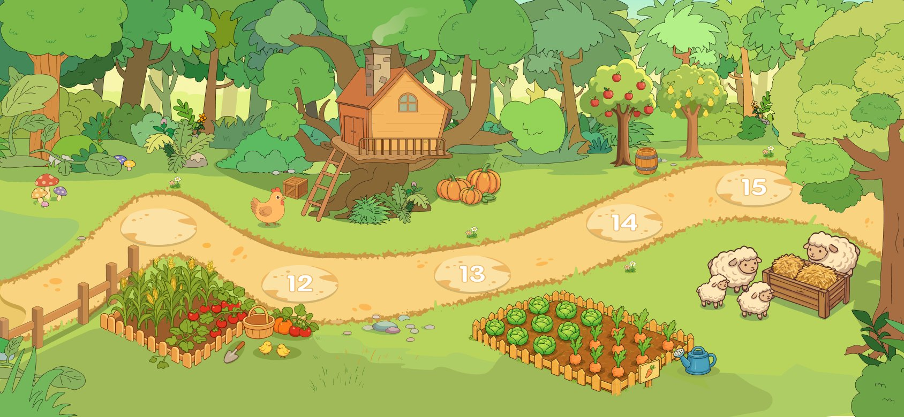
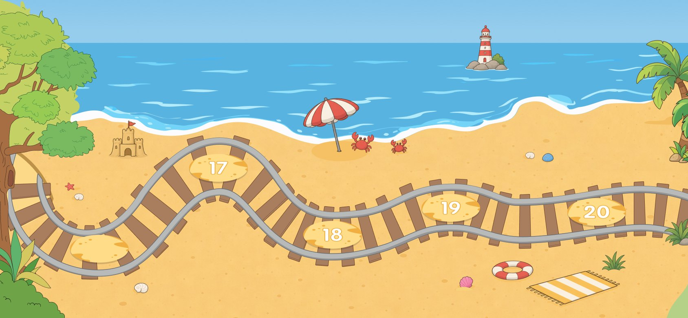
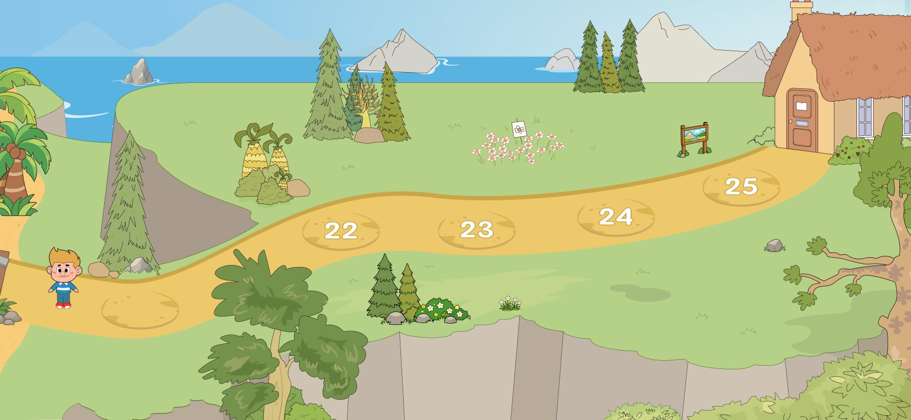
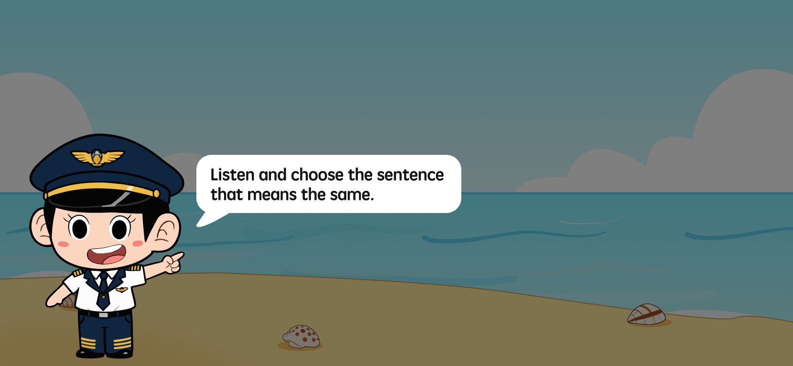
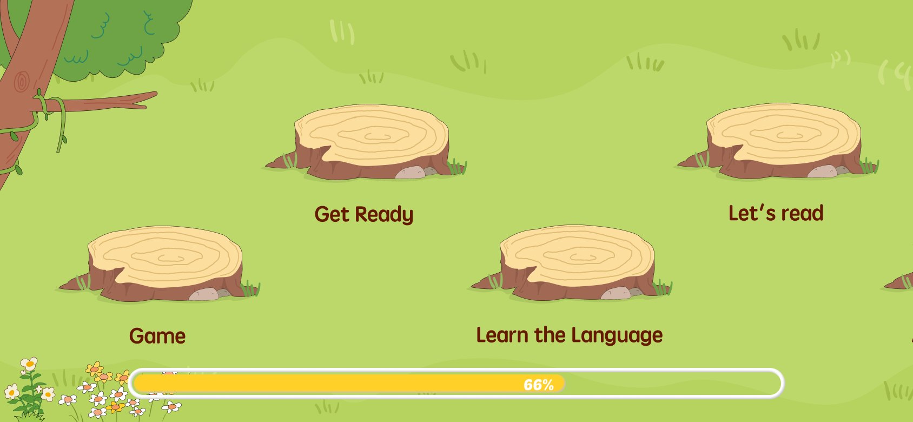
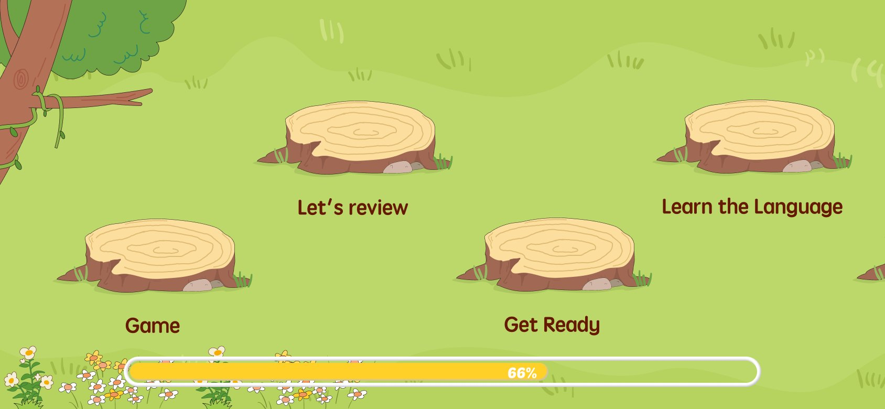
一阶 / 二阶 / 四阶游戏界面
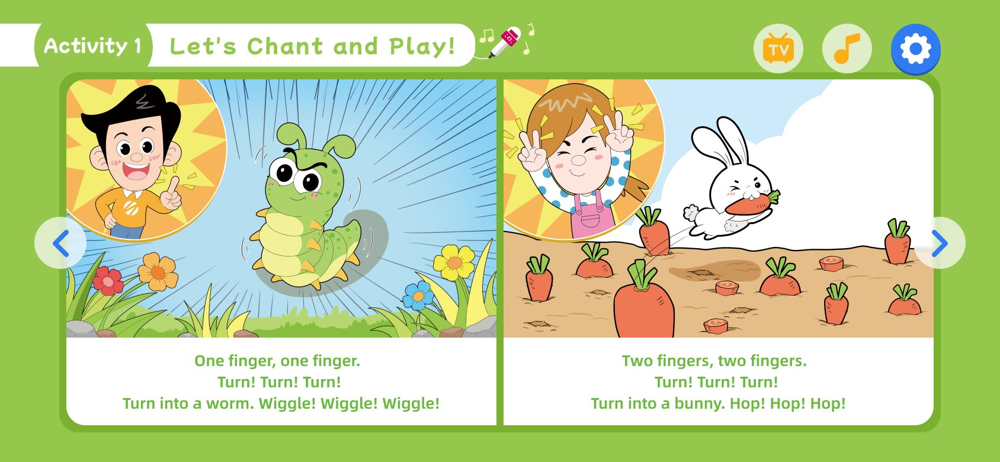
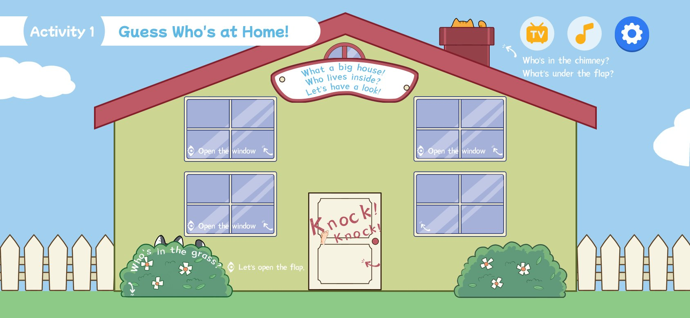
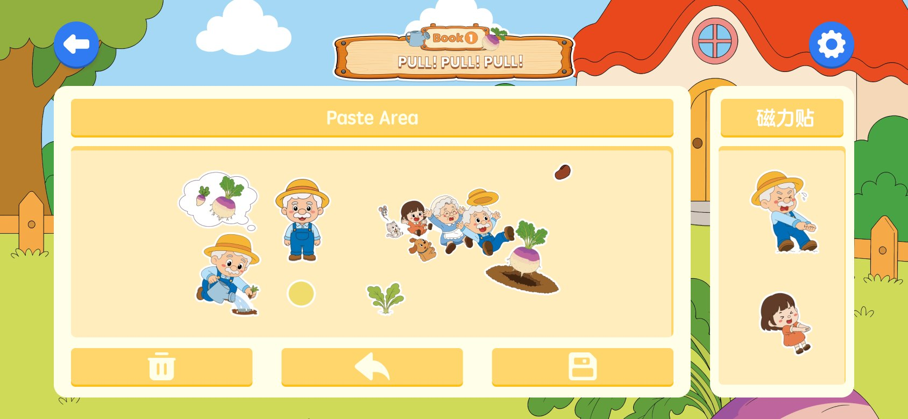
儿童端
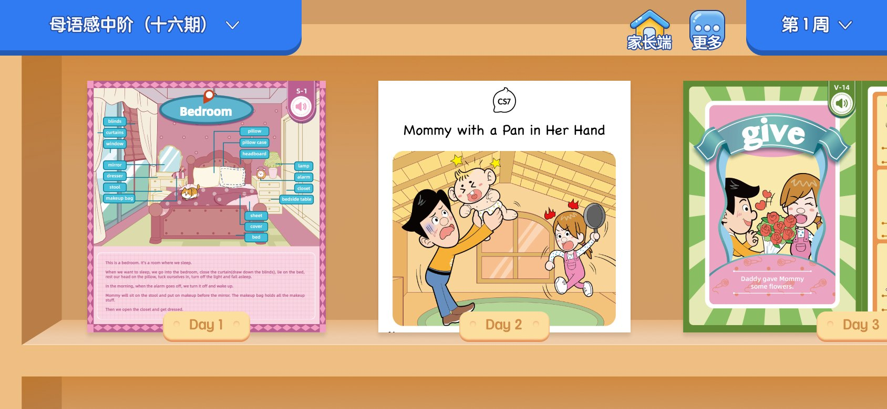
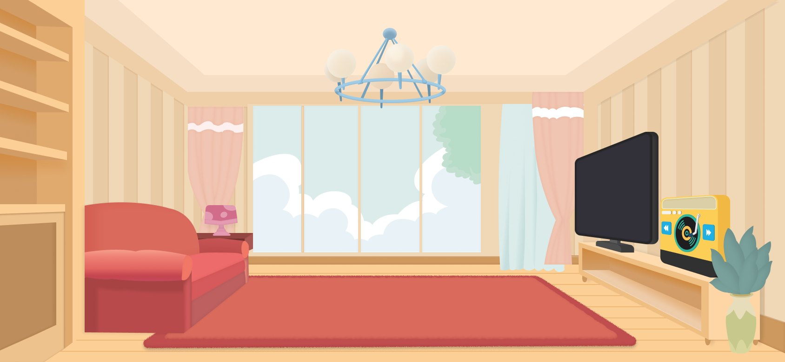
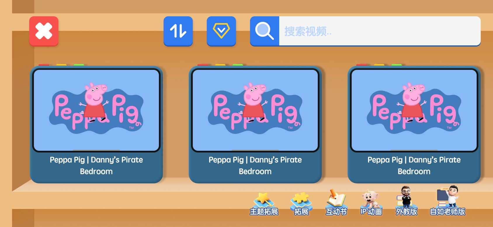
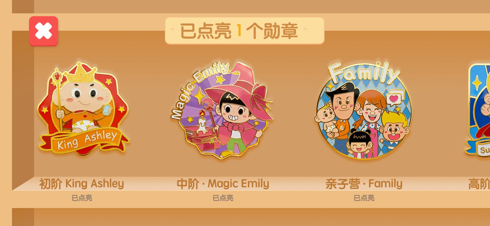
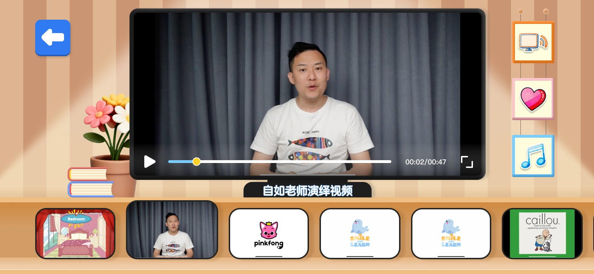
家长端 · 我负责的更新
课程列表、班级页、日历弹窗的颜色说明，以及儿童端入口，都是我这次更新的部分。
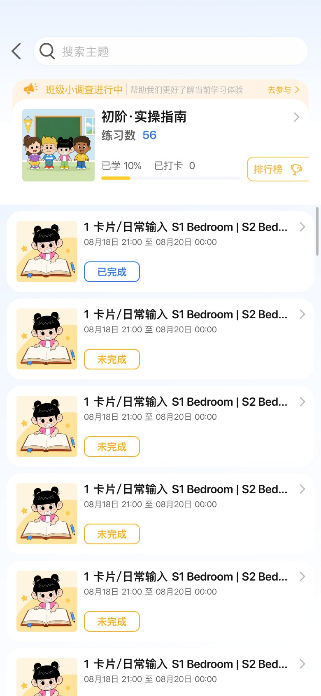
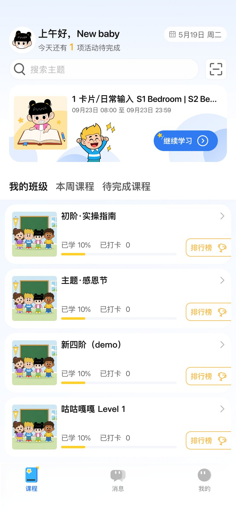
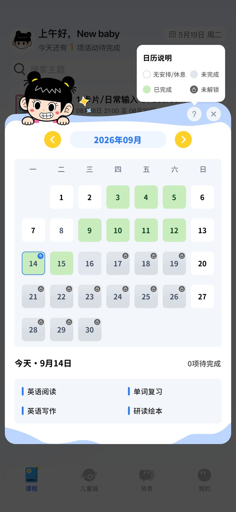
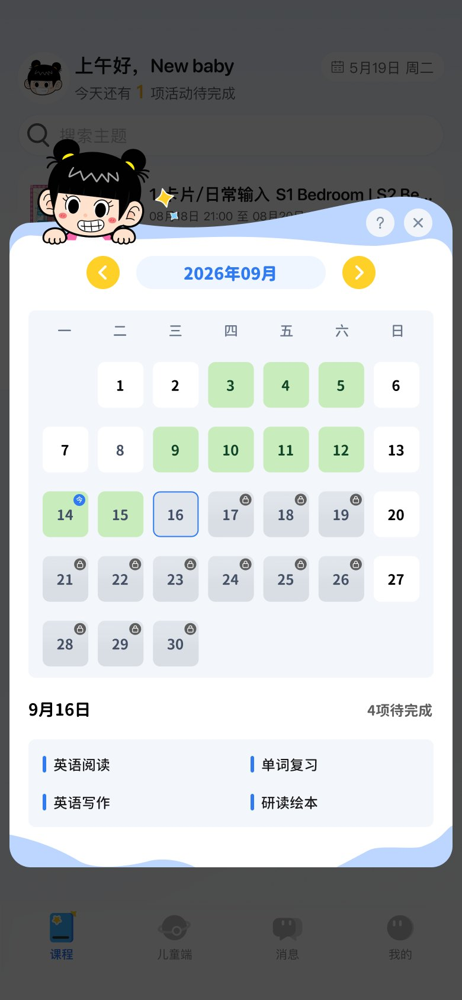
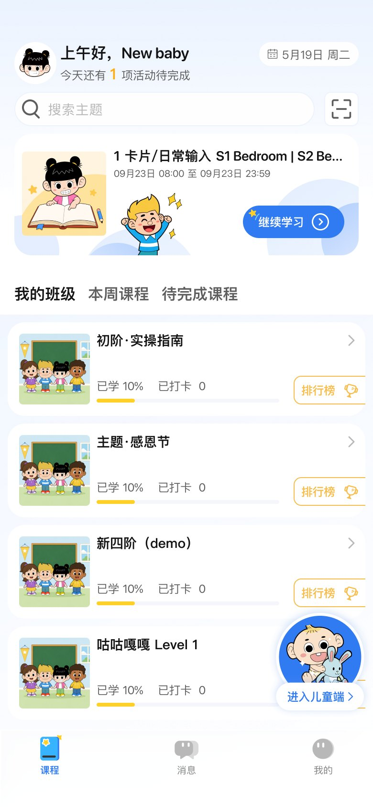
04 / 成果
家长反馈：孩子愿意学，每天都主动打开，并且开始能开口说英语。